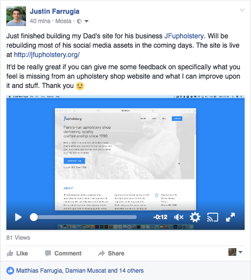

Building with continuous feedback
Even though sometimes I like the solitude whenever I’m building something, I did appreciate the different perspective my father brought to the table whenever he used to pop by my room. Even when I showed him a skeleton of the site itself, he had some valuable input.
One such example is when he recommended I include the companies he’s worked with. I thought testimonials alone did the trick and didn’t want to make people scroll further, but he argued that there could be an added sense of legitimacy and professionalism to his brand. Even though it was a rudimentary design decision, it was an example of why you shouldn't build alone. I used the following technologies: Gulp, Wordpress, SCSS, Understrap (Underscores + Boostrap) and Browsersync.

I hate to admit it, but I’m a perfectionist. Many creators are. This was a big step for me personally. Posting statuses on social networks isn’t something I usually do, you’d most likely find me talking in a FB Group or a Slack Chat to other designers. It was time to get out of the bubble and see what other people’s opinions were. If anything, I was still going to get back to this at some point. (Need to work on accessibility, image delivery and maybe some animation for better visual feedback.)
The Results
With a bit of help from the interwebs and a friend who worked in marketing, I did as much as I could (and knew) to make sure that the code I wrote was semantic and that the site itself was being pushed through the right channels where it can be targeted towards the people that need it the most.
5 to 12
phonecalls daily
14 to 23
new fb messages daily